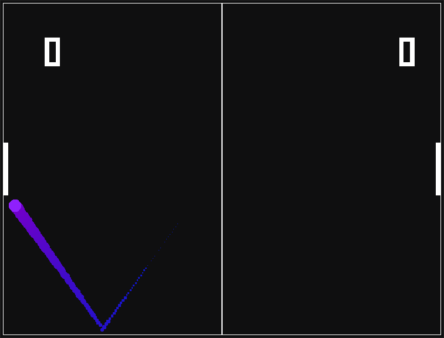
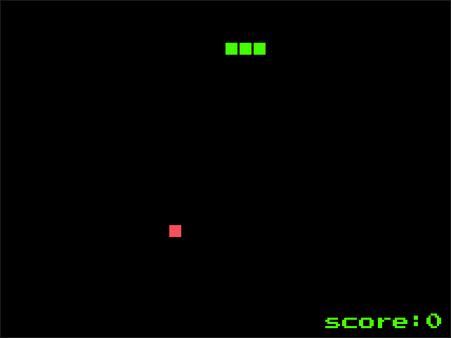
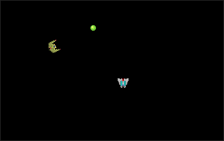
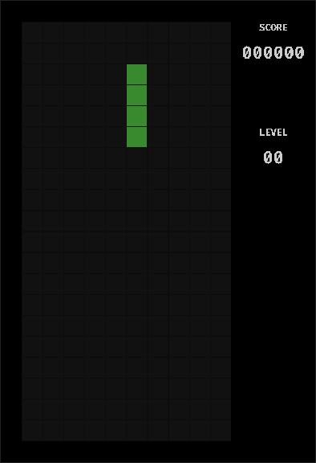
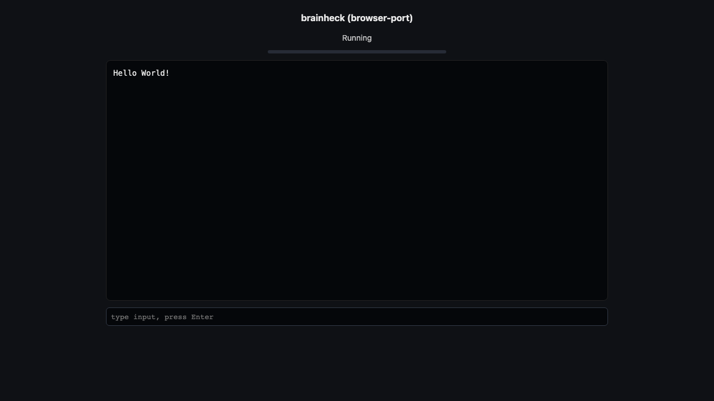

browser-port demos
Turn an open-source C/C++ SDL game into a link anyone can play, in one command. Each of these was ported by running browser-port port <github-url>, with no flags typed by hand.
Get it on GitHub Use it with your agent
Pong C++ SDL2, blocking loop
Two-player Pong. Press Space to start. Its main loop never yields; browser-port added a yield at build time so it runs in a browser tab.
Play in your browser
Snake C SDL2, blocking loop
Classic snake. Press Enter, then steer with the arrow keys. Ported in one command, no source edits.
Play in your browser
Space shooter C++ SDL2 game
A small arcade shooter from a WebAssembly game book. The first build failed at link time; browser-port fixed it on its own and verified 60 fps.
Play in your browser
SDL Tetris C SDL2 game
A Tetris clone. Arrow keys move and rotate, Space drops. Measured at 57 fps in headless Chrome.
Play in your browser
brainheck C terminal program
A Brainfuck interpreter in a browser terminal. Its output matched the native build on the same inputs.
Play in your browser